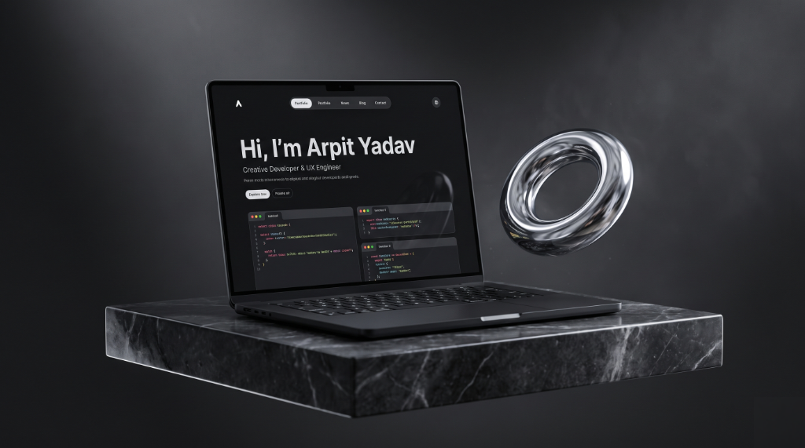
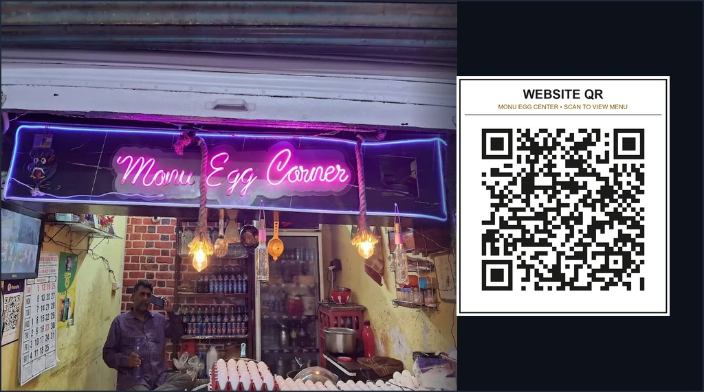

Arpit's Creative Lab & Interactive Studio
An independent sandbox for interactive browser physics, procedural audio engines, 3D living canvases, and creative software experiments. Built as a dedicated creative playground alongside Arpit's engineering portfolio.
Never Walk Alone — Walking Crowd Simulation
Pure HTML5 Canvas multi-layered crowd physics simulation using sprite-sliced hand-drawn pedestrians. Peeps bob, walk with individual speeds, and respect depth sorting. Click anywhere inside the canvas to drop a new walker!
Cozy SFX — Studio Soundboard & Pentatonic Synth
A real-time procedural frequency synthesizer with dynamic limiter, harmonic wave shaping, and real-time spectrum analysis. Every click is generated mathematically with zero external audio files.
Curved Liquid Curtain & Namaste
A Dennis Snellenberg-inspired preloader sequencing 9 international greetings with an organic liquid SVG curtain morph.
Sylva — Procedural Living Moss Ecosystem
An organic interactive 3D moss-root landscape engineered with WebGL procedural lighting, camera dampening, and reactive botany. Drag to rotate, pinch or scroll to zoom.
Kinetic Multi-Stop Gradient Stroke
Dynamic SVG parametric path tracing with continuous subpixel curvature and non-scaling stroke architecture.
Interactive Terminal & Spotlight Palette
Live system telemetry card with real UTC clock synchronization and direct Ctrl+K spotlight integration.
export const creativeLab: StudioProfile = {
creator: "Arpit Yadav",
portfolio: "arpity.me",
stack: ["Web Audio API", "Canvas 2D", "Three.js"],
customCreations: "Persisted in LocalStorage",
status: "CREATING // Open for Experiments"
};Interactive Developer Portfolio & Audio Architecture
The original interactive developer portfolio architecture engineered with zero frameworks, relational skill-to-project state mapping, and embedded sound synthesizer.

Algorithmic Problem Solving
C/C++ problem solving across LeetCode & GeeksforGeeks; certified in the GFG Code Catalyst coding contest.
Monu Egg Center — Fast Food & High-Protein Street Kitchen
Commercial cloud kitchen digital platform built for Kanpur's popular street kitchen (Gaushala Road, Saket Nagar). Features real-time menu & gym diet packs manager with Firebase Cloud Firestore sync, Google review rating funnel with automated clipboard injection, and print-ready digital table QR standees.

Custom Creations & Uploaded Experiments
Upload your latest designs, shader canvases, audio synthesizers, or IoT prototypes. Everything is stored in your browser's persistent storage and can be exported as a JSON manifest.
No Custom Creations Yet
Ready to showcase your new creative experiments? Click the button below to upload a canvas shader, mini-game, UI component, or embedded prototype!